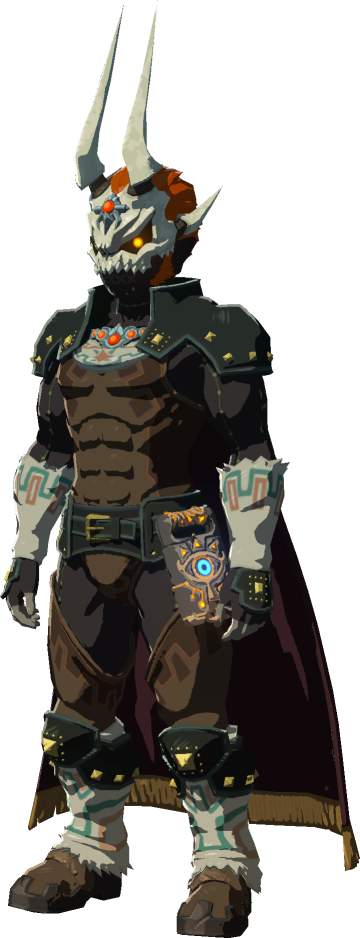
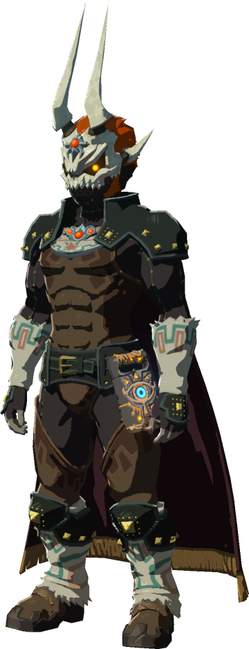

This page is about armor sets in the game
Armor are items of clothing in The Legend of Zelda: Breath of the Wild. Link can don a great variety armor items to defend himself with, keep warm, or just look plain stylish. Armor items include caps, tunics, trousers, jewelry, masks and unique pieces of armor awarded for completing side quests.
Armor Sets are matching collections of Armor. When worn, particular Armor Sets may confer additional effects known as Set Bonuses if every piece of Armor in that Set has been enhanced at least twice by a Great Fairy. As Armor introduced with The Master Trials and The Champions' Ballad cannot be enhanced, the Royal Guard Set and Tingle's Set will provide their Set Bonuses when worn regardless. The Phantom Equipment, Soldier's Set, and Well-Worn Outfit lack any kind of Set Bonus.


 
